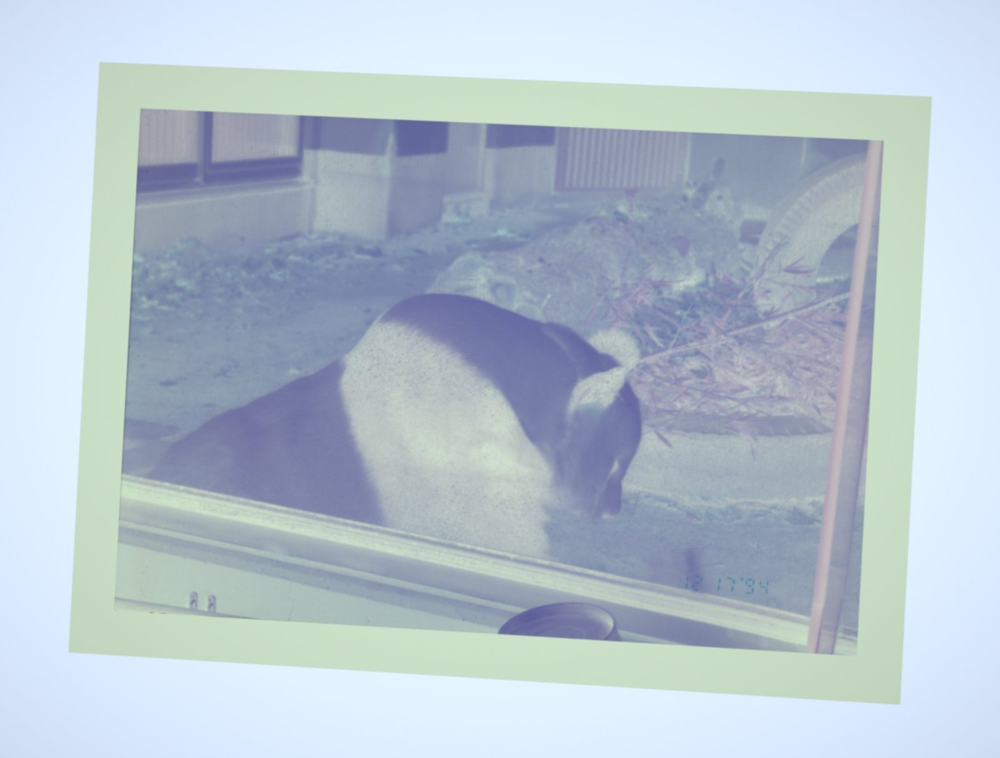

Prima di sviluppare.
Before you develop.
Bastano una foto del negativo e pochi accorgimenti per iniziare.
Start with a photo of your negative and a few simple preparations.
Apri lo sviluppoOpen developmentFotografa il negativo.
Photograph the negative.
Serve una pellicola già sviluppata chimicamente. Il sito converte la foto del negativo in un positivo digitale.
Your film must already be chemically developed. This site converts a photo of the negative into a digital positive.
- Appoggia il negativo su una luce uniforme, come un pannello LED o uno schermo bianco.
- Tieni il telefono parallelo alla pellicola e fermo. Evita riflessi e luce diretta.
- Inquadra il fotogramma intero con un po' di bordo della pellicola. Il motore prova a ritagliarlo e raddrizzarlo.
- Carica la foto, scegli la pellicola e premi “Sviluppa foto”. Se non conosci la pellicola, usa il profilo generico.
- Place the negative over an even light, such as an LED panel or a white screen.
- Keep the phone parallel to the film and steady. Avoid reflections and direct light.
- Include the whole frame and some film edge. The engine attempts to crop and straighten it.
- Open the photo, choose your film stock and press “Develop photo”. Use the generic profile if you don't know the stock.

La calibrazione è facoltativa.
Calibration is optional.
Puoi iniziare con la sola foto del negativo. Due foto aggiuntive danno al motore riferimenti più utili per correggere la luce e la maschera arancione.
You can start with just the negative photo. Two additional photos give the engine references for uneven light and the orange film mask.
- Foto della sola luce
- Bare-light photo
- Togli la pellicola senza muovere il telefono. Mantieni inquadratura, orientamento e risoluzione del negativo. Evita le zone bruciate: se la luce è saturata, la foto viene ignorata.
- Remove the film without moving the phone. Keep the negative's framing, orientation and resolution. Avoid blown-out areas: a clipped light reference is ignored.
- Foto del bordo
- Film-edge photo
- Fotografa da vicino un tratto non esposto della stessa pellicola. Mantieni esposizione e bilanciamento del bianco coerenti con lo scatto del negativo. È una foto separata: può avere dimensioni diverse.
- Take a close-up of an unexposed edge of the same film. Keep exposure and white balance consistent with the negative capture. This is a separate reference and may have different dimensions.
Senza calibrazione, la base viene stimata dai bordi. Una dominante nel risultato può dipendere anche dalla luce, dal telefono o da questa stima.
Without calibration, the base is estimated from the edges. Colour casts may come from the light, the phone or this estimate.
Confronta, poi scegli.
Compare, then choose.
- Sviluppo base
- Base development
- La conversione del negativo, senza pulizia o ingrandimento AI.
- The converted negative, without clean-up or AI upscaling.
- Migliorata
- Enhanced
- Riduce polvere e rumore, con nitidezza moderata. Nel risultato, il cursore confronta questa versione con lo sviluppo base.
- Reduces dust and noise with moderate sharpening. In the result, the handle compares this version with base development.
- Ingrandita AI
- AI upscale
- Ingrandisce ×2 o ×4 e può inventare dettagli. Si attiva nelle opzioni e richiede più tempo. Lo sviluppo base rimane disponibile.
- Upscales ×2 or ×4 and may invent details. Enable it in the options; it takes longer. Base development remains available.
La pagina Esempi separa i confronti sui fotogrammi, le versioni di pulizia e l'esperimento colore. Quest'ultimo non è la resa predefinita del tuo sviluppo.
The Examples page separates frame comparisons, clean-up versions and the colour experiment. That experiment is not the default rendering for your development.
Formati e limiti attuali.
Current formats and limits.
- Apri JPEG e PNG. Le immagini HEIC dipendono dal browser e sono supportate in Safari. I DNG non sono letti dal sito.
- Il negativo viene ridotto a un massimo di 3000 pixel sul lato lungo per contenere la memoria usata.
- L'AI lavora su un ingresso fino a 1024 pixel: il risultato può arrivare a 4096 pixel.
- Scarica la versione visualizzata in JPEG oppure TIFF a 16 bit. Il contenitore a 16 bit non ricrea i dati persi in uno scatto JPEG.
- Le foto vengono elaborate sul dispositivo. Scarica i risultati prima di chiudere o ricaricare la pagina.
- Open JPEG and PNG. HEIC depends on the browser and is supported in Safari. DNG is not read by the site.
- Negatives are resized to at most 3000 pixels on the long edge to limit memory use.
- AI processes an input up to 1024 pixels, producing an output up to 4096 pixels.
- Download the selected version as JPEG or 16-bit TIFF. A 16-bit container cannot recover data lost in a JPEG capture.
- Photos are processed on your device. Download results before closing or reloading the page.
Un progetto aperto.
An open project.
Ai-Film-Developing è un prototipo. Il codice, i profili pellicola e i limiti del motore sono disponibili su GitHub. Le immagini di esempio provengono dal dataset BlueNeg, Copyrighted by Tien-Tsin Wong.
Ai-Film-Developing is a prototype. Its code, film profiles and engine limitations are available on GitHub. Sample images come from the BlueNeg dataset, Copyrighted by Tien-Tsin Wong.